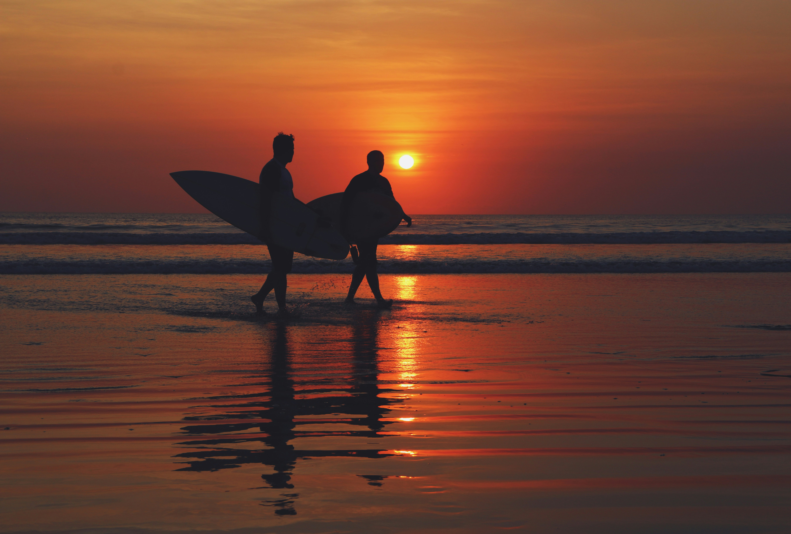

Eiffel Tower, Paris
Visited: June 2024

Cherry Blossoms, Japan
Visited: April 2024
I’m so excited to have you join me on this incredible journey as I explore the world, one destination at a time. Through this blog, I’ll be sharing my travel experiences, tips, and stories from the many places I visit. Whether it’s a bustling city, a hidden gem, or a serene beach, my goal is to offer you a glimpse into the beauty, culture, and adventure that each place has to offer. From delicious local cuisine to the most breathtaking landscapes, I hope to inspire your next travel adventure and help you create unforgettable memories of your own. Let’s discover the world together, one post at a time!
Traveling allows me to discover new cultures, meet new people, and experience life differently.
Eiffel Tower, Paris
Visited: June 2024
Cherry Blossoms, Japan
Visited: April 2024
| Destinations | Date | Reason |
|---|---|---|
| Italy | May 2025 | Food Tour |
| Australia | July 2025 | Adventure |
Always carry a photocopy of your passport and important documents in a separate bag. It can save your trip if anything gets lost!
Check out my list of travel essentials, featuring everything you need for a smooth and enjoyable journey!
Learn more at Southern Alberta Institute of Technology.
Travel is not just about visiting new places; it’s about creating unforgettable memories. Every journey I’ve taken has shaped me in ways I never expected, from the peaceful moments watching a sunset on the beach to the adrenaline-filled days exploring new cities. These experiences are what I cherish the most, and I’m excited to share them with you through this blog.
Here is one of my favorite travel memories:
Beach Sunset, Bali
Visited: August 2023